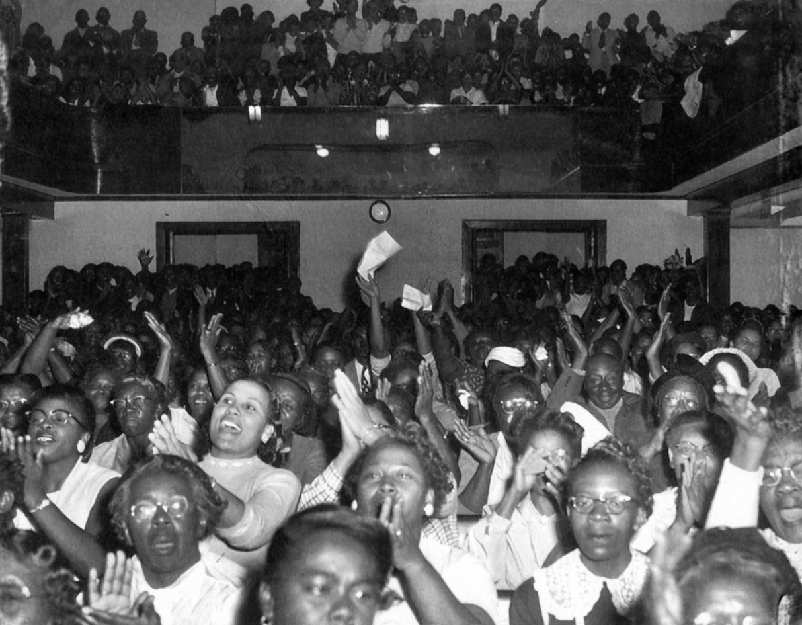
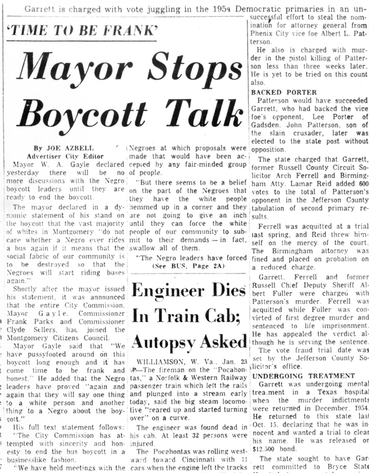
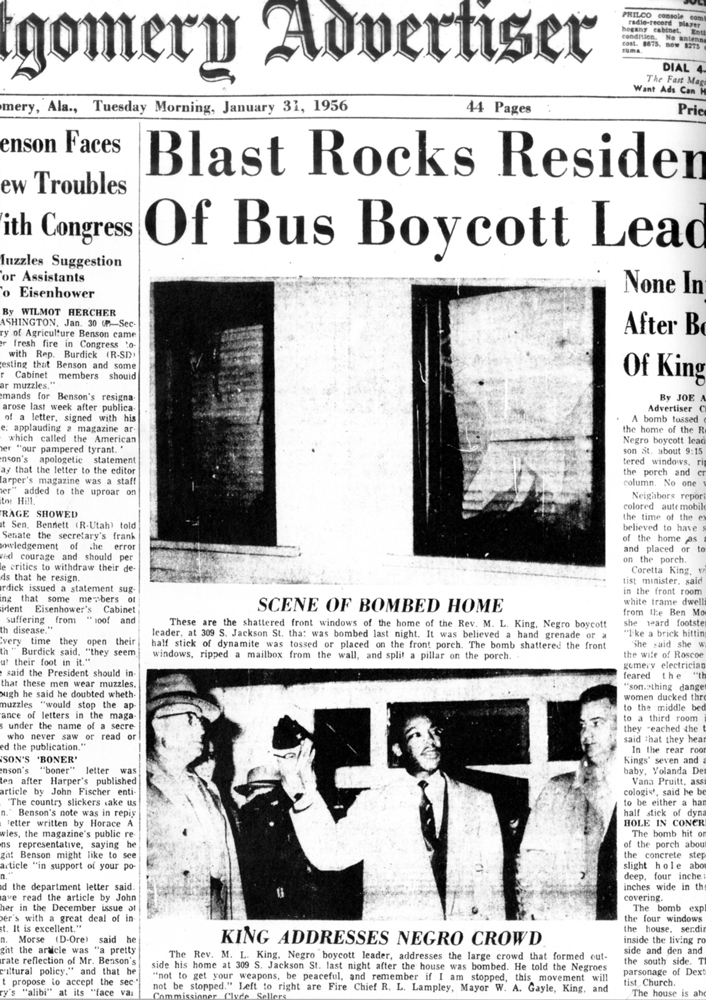
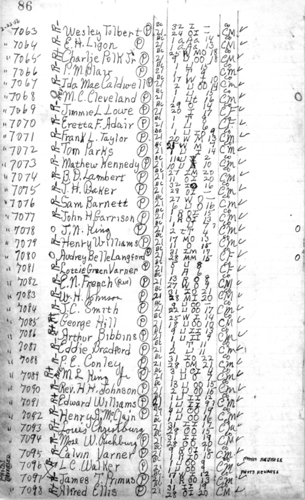
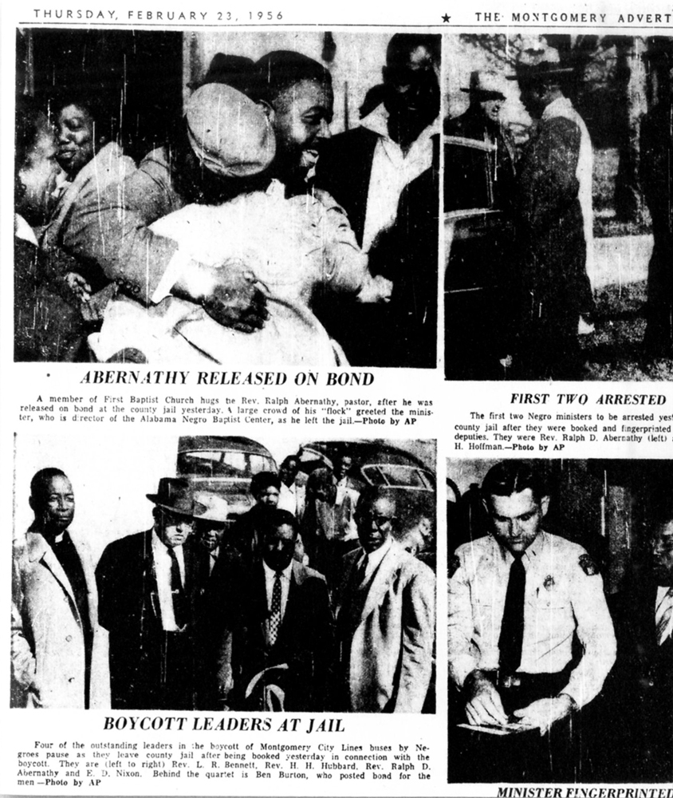
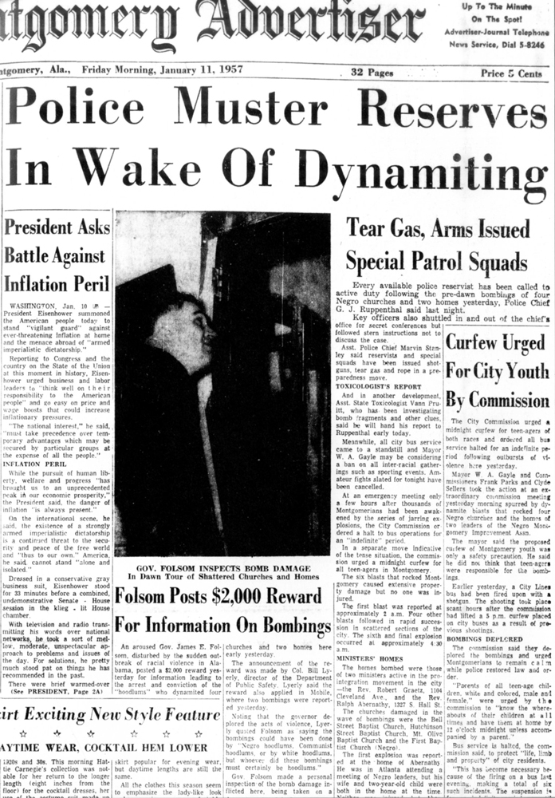

Professor Jo Ann Robinson, President of the Women’s Political Council made up of black Montgomerians, writes to the mayor of Montgomery to warn of the possibility of a bus boycott.
Martin Luther King Jr. becomes pastor of Dexter Avenue Baptist Church in Montgomery.
African American Claudette Colvin, 15, is arrested alter allegedly violating bus segregation laws.
African American Mary Louise Smith, 18, is arrested after allegedly violating bus segregation laws.
African American Rosa Parks is arrested after allegedly violating bus segregation laws. She is charged with disorderly conduct.
Black Montgomery activists, including professor Jo Ann Robinson, attorney Fred Gray, and labor leader E.D. Nixon, begin setting the stage for a bus boycott.
Rosa Parks is convicted and fined in Montgomery city court. A one-day boycott of city buses results in about 90 percent of normal black ridership staying off buses. The Montgomery Improvement Association is formed by black leaders, who elect the Rev. Martin Luther King Jr. president. Several thousand black citizens attend the first MIA mass meeting at Holt Street Baptist Church, where they overwhelmingly support continuing the bus boycott.
The first negotiations between MIA leaders and city and bus company officials deadlock over a proposal by MIA spokesmen for a bus seating policy that is more fair to blacks but still segregated.
The MIA begins to operate a car pool system. In time, the system will grow to more than 200 private automobiles and station wagons, many of which are operated by black churches.
The vice president of the parent company of the Montgomery bus system meets with city and local bus officials and with MIA leaders. The mayor forms a biracial committee, supposedly to negotiate a compromise.
The biracial committee meets but cannot agree on a compromise proposal. While never disbanded, there is no record of the committee meeting again.
MIA leaders meet with city commissioners, but neither group modifies its position.
Mayor W.A. Gayle announces a tougher policy on the bus boycott, including no further negotiations with the MIA.
King is charged with speeding and jailed by Montgomery police.
After getting a series of threatening phone calls, King reports sitting at his kitchen table late into the night considering whether to abandon the leadership of the boycott. But his resolve is strengthened by a divine voice telling him to continue the fight.
At the urging of attorney Fred D. Gray, the executive board of the MIA votes to support the filing of the federal lawsuit to challenge city and state bus segregation laws. That night King’s house is bombed with his wife and their infant daughter inside, but they are not injured. An angry group of blacks, some of them armed, appears ready to react with violence, but King calms the crowd by speaking to them from his porch.

Fred D. Gray and Charles D. Langford file the Browder v. Gayle lawsuit on behalf of four female plaintiffs to challenge the constitutionality of city and state bus segregation laws. E.D. Nixon’s home is bombed; no one is injured.
A White Citizens Council rally in Montgomery is packed with thousands who applaud city officials for fighting bus desegregation.
A Montgomery circuit judge orders a grand jury investigation into whether the bus boycott violates a state boycott conspiracy law.
Those attending a mass meeting overwhelmingly reject a bus settlement proposal by Men of Montgomery, a white businessmen’s group.
 A Montgomery County grand jury indicts about 90 bus boycott leaders and charges them with violating a statute barring boycotts without just cause.
King is found guilty of violating the boycott conspiracy law. King’s sentence of a $500 fine or a year in jail is delayed pending appeal. It is not until a year later that he loses his appeal and pays the fine. Other indicted MIA leaders are never tried.
A National Deliverance Day of Prayer to support the bus boycott takes place, with several cities outside the South taking part.
The U.S. Supreme Court dismisses an appeal of a July 1955 federal appeals court ruling outlawing bus segregation in South Carolina. The decision is misconstrued by many as declaring all intrastate bus segregation unconstitutional. The Montgomery bus company decides to implement a policy of desegregation.
Bus companies in more than a dozen Southern cities stop the practice of segregated seating in response to the Supreme Court decision. But the Montgomery mayor declares that city bus segregation will continue, and the police threaten to arrest bus drivers who disobey segregation laws.
Montgomery officials seek an injunction from a state judge to force the local bus company to comply with segregation laws. It is issued a week later.
A Montgomery federal court holds a hearing on the Browder v. Gayle lawsuit challenging bus segregation law. Claudette Colvin, Mary Louise Smith, and two other plaintiffs testify before circuit judge Richard T. Rives and district judges Frank M. Johnson Jr. and Seybourn H. Lynne.
Federal judges Rives and Johnson rule the city and state bus segregation laws are unconstitutional. Lynne dissents.
The Rev. U.J. Fields resigns as secretary of the MIA and accuses other MIA leaders of misusing funds. King returns from an out-ot-state trip to address the allegations.
At an MIA mass meeting, Fields apologizes.
Federal judges in Montgomery issue an injunction against segregation on Montgomery buses, but suspend its enforcement pending an appeal to the U.S. Supreme Court.

The home of Lutheran minister Robert Graetz, a white member of the MIA board, is bombed. No one is injured.
With no dissent, the U.S. Supreme Court upholds the Montgomery federal court’s Browder v. Gayle decision striking down Alabama’s bus segregation laws.

Those attending an MIA mass meeting unanimously vote to end the bus boycott when the U.S. Supreme Court decision is implemented.
The U.S. Supreme Court rejects the Montgomery City Commission’s appeal of the Browder v. Gayle decision.

The Supreme Court’s Browder ruling takes effect. Those attending mass meetings of the MIA again vote to end the bus boycott.
Black citizens desegregate Montgomery buses after the 13-month boycott. The bus company resumes full service.
Someone shoots into King’s home.
Five white men attack a 15-year-old black girl at a Montgomery bus stop.


Rosa Jordan, a black woman, is shot in both legs while riding a Montgomery bus.
A sniper fires on another city bus.
Four churches and two homes are bombed: Bell Street Baptist, Hutchinson Street Baptist, First Baptist and Mount Olive Baptist, plus the homes of the Revs. Robert Graetz and Ralph Abernathy. An unexploded bomb is found on the porch of King’s parsonage.